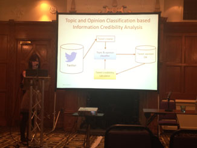
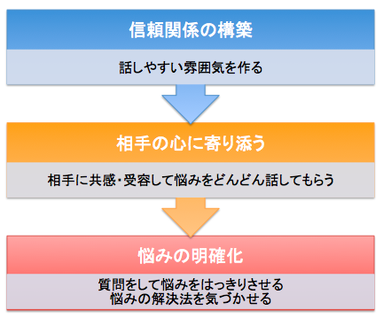

英数字/日本語モード切替を自動で行うモードレス入力の研究. キーボードから入力されたローマ字列から n-gram ベースの識別モデルを用いて日本語らしい部分のみ仮名変換を行い, それ以外はローマ字のままにします. これによって英数モードとかなモードの入力モードを切り替える手間がなくなります. 先行研究では識別に文字表記 n-gram のみを用いていたのに対して, 本研究では文字種(大文字/小文字/数字/記号) n-gram や曖昧性のない英語辞書を用いることで 99.71% の精度のモードレス入力が可能となりました.

Twitter の投稿の情報信憑性を数値化して出力するシステム. Latent Dirichlet Allocation (LDA) によって投稿を話題ごとにクラスタリングし, それぞれの投稿の意見の極性 (肯定/否定) を推定し, 肯定/否定の割合によって情報信憑性を数値化します.
句単位での照応関係を同定する研究. 例えば,
「君もそろそろ部長だね」と常務から言われました。
あの話は一体なんだったんでしょう
という文章のあの話が何を指しているかを当てる手法の研究です. こうした照応関係は対話にて発生することがありますが, これまでの照応解析はあくまでも単語単位での照応関係を扱うもので, 句単位での照応関係が行わなれていなかったので, 日立製作所横浜研究所インターンにて取り組みました.

対話を通して相談者自身が問題解決の気づきを得られるように支援するエキスパートシステム. 心理学分野の知見やテクニックをコンピュータで実現することを目標としています. 自然言語処理では照応解析や感情推定, 談話要約の技術が使われています.
形態素解析器MeCab用辞書mecab-ipadic-neologd向けの前処理ツール.
紹介記事1: mecab-neologd 前処理用 Python モジュール neologdn 公開しました - debug me
紹介記事2: テキスト前処理用Pythonモジュールneologdnの紹介
上記neologdnのJavaバージョン
オンライン機械学習による解析モデルのアップデートが可能な形態素解析ツール Rakuten MA の Python ポートライブラリ.
紹介記事: Pure Python なオンライン形態素解析ツール Rakuten MA - Qiita
ひらがな・カタカナ・半角カナ・全角カナの文字種変換をほどほどに高速に行える Pure-Python ライブラリ. 自然言語処理の前処理用のツールとして開発しました.
紹介記事: Python3での日本語変換モジュールの比較 - Qiita
感情分析器 ML-Ask の Python ポートライブラリ. テキストから感情や評価極性など様々な特徴を推定します.
紹介記事: ML-Askでテキストの感情分析 - Qiita
英語テキストの前処理モジュール. typoを修正したり, 文字の連続表現を正規化します. 例えば, Cooooool を cool に, thanxxx を thanx に変換します.
オンライン機械学習ライブラリ OLL の Python ラッパー. 手軽に Python でオンライン学習を行えるのが特長です.
Count-Min Sketchライブラリ madoka の Python ラッパー. Python 標準の dict 型や Counter 型よりも省メモリで Key-Value データ型を扱えます.
ウェーブレット行列/木での FM-index ライブラリ shellinford の Python ラッパー. Python で手軽に全文検索を実現できることや, 検索の速さとインデックスのサイズが小さい(省メモリ・ディスク)ことが特長です.
tr コマンドのアルゴリズムを Python で利用するためのライブラリ.
UserAgent から携帯電話のモデル名を抽出するライブラリ.
紹介記事: Python - UserAgentから携帯電話の機種名を抽出 - Qiita
スタンフォード大学のオンライン講義サービスCourseraのMachine Learningコースの課題として, ロジスティック回帰やニューラルネットワークなどを実装しました.
Stanford Coursera Machine Learning Course Certificate
かな漢字変換における同音異義語による誤変換の解消手段として歴史的仮名遣表記に着目しました. そこで歴史的仮名遣表記のかな漢字変換における有用性を評価するため, 日本語辞書 NAIST-Japanese Dictionary の読みを歴史的仮名遣化し, 平仮名表記の曖昧性を情報エントロピーなどの尺度で現代仮名遣表記と評価するプログラムを作成しました. そして評価の結果, 歴史的仮名遣表記の方が有意に曖昧性が低いことがわかりました.
音声対話による質問応答システム. 返答時に 3D アバターが返答の内容に沿った感情表現を行います. 例えば, 質問の答えが残念なものは暗い喋り方でユーザに答えます. 音声対話ツールキット MMDAgent をベースに, 音声認識用辞書の語彙拡張, 質問検索, 感情分類処理を追加しました. 質問検索には Yahoo!知恵袋のデータを用いました. 音声認識用の辞書にも Yahoo!知恵袋の質問文 (約50MB) から句単位(フレーズベース)によって構築しました.
Twitter のログを解析して利用者が興味を持ちそうな Twitter アカウントを推薦するシステム. 共通の知人がいたり共通の話題が多い人に興味を持つだろうという仮定をもとに, 推薦基準として Latent Dirichlet Allocation (LDA) によるトピックの類似度や利用者のリプライ頻度による重み付けをした共通フォロワー数などを用いました.
→ →
初期画面 → 処理中 → 結果出力
ゲーム用コントローラのボタンを押すと音声とテキストによって大学および学園祭の情報を案内するシステム. 学園祭では親子連れで来る方が多いため, 子供にも楽しめるように入出力インターフェースに視覚 (GUI), 聴覚 (音声合成), 触覚 (ゲーム pop'n music 用コントローラ) を使うものを選びました. システムの処理系の他に画面インターフェースの設計・開発も行いました.